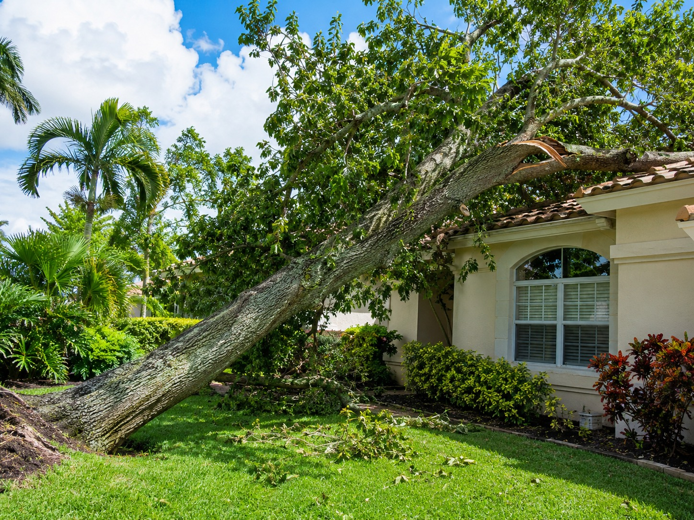
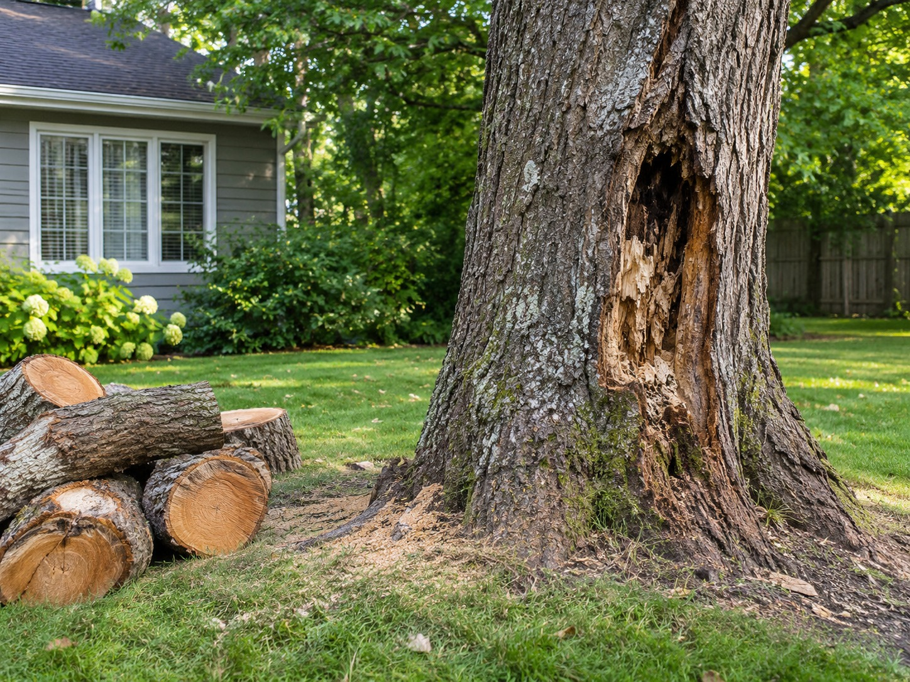

01 / TREE REMOVAL
Unwanted Tree Removal
Discuss removal of a tree that you no longer want on your residential property.
Unwanted tree, storm damage or a tree causing concern near your property? Call to discuss tree removal and ask about available appointment options in the Lantana area.
Independent tree removal enquiry and referral service serving Lantana and nearby communities.

Whether a tree has become unwanted, damaged or concerning, a telephone enquiry is a good first step towards discussing possible removal services.
Discuss removal of a tree that you no longer want on your residential property.
Ask about removal of fallen or damaged trees following bad weather, subject to provider availability.
Enquire about removing a tree that appears unstable, damaged or too close to a structure. A qualified professional must assess risk.
Looking to arrange a tree removal appointment? Tell us where the tree is and what needs to be removed.
Call (728) 300-6263Explain your tree removal needs and ask about possible local referral options.
Tell us your location and whether you're looking to have a tree removed.
Share the approximate size and location of the tree and any access or storm-related concerns.
Your enquiry may be reviewed or referred to an independent provider who can discuss the next steps, where available.

Call if you're a homeowner in Lantana or a nearby community and are looking to have a tree removed. Please provide your city or ZIP code when you enquire.
Referral and appointment options depend on location and the independent providers participating at the time of your enquiry.
Call (728) 300-6263Areas listed are not a promise of contractor coverage.
Ask about local tree removal enquiries and possible appointment options.